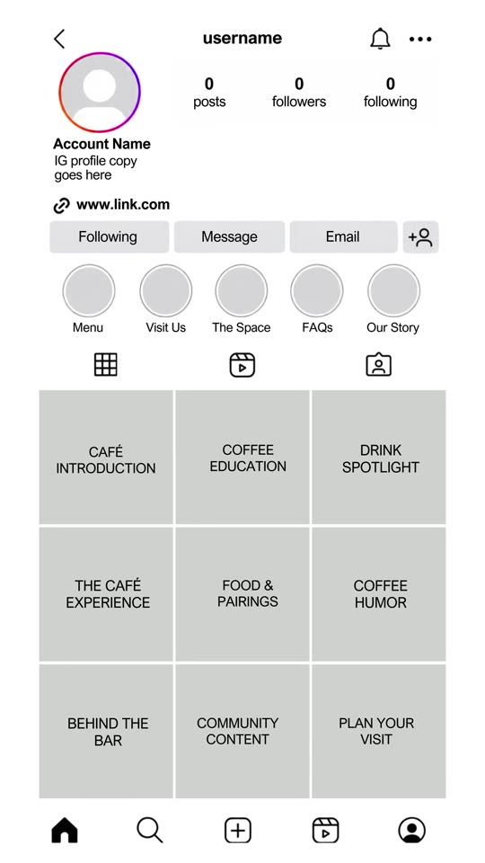
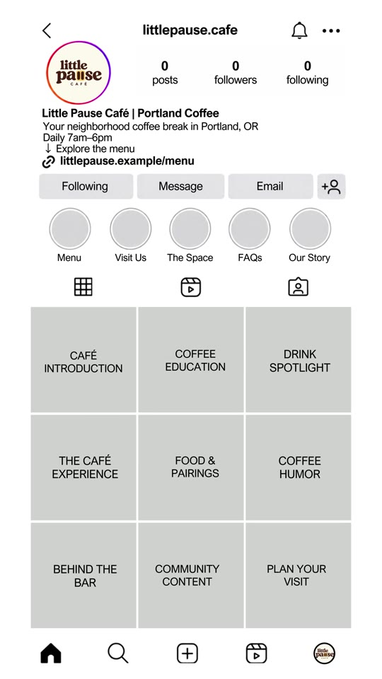
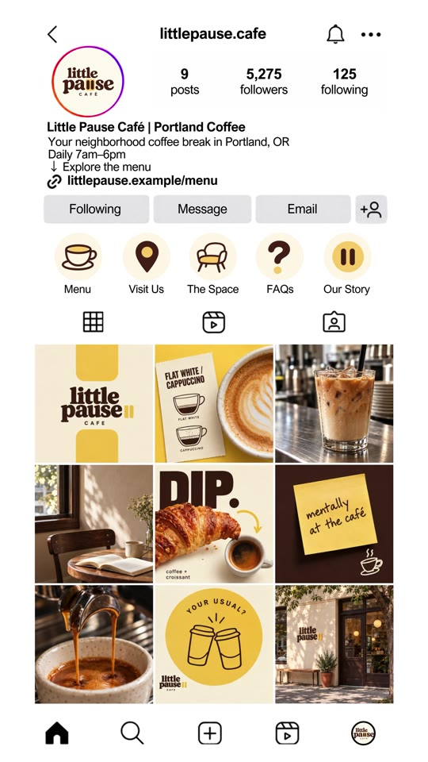

Marketing · Local-Business
The 9-Grid Content Pillar Framework for Local Cafes & Restaurants
A structured Instagram profile architecture and 9-pillar content matrix designed for local food and beverage establishments (cafes, coffee shops, bakeries, bistros). Outlines high-converting bio anatomy, essential story highlight categories, and a balanced 9-post feed cadence covering education, drink spotlights, atmospheric vibe, food pairings, humor, and logistical visiting information.

Profile Anatomy & Content Matrix
- High-Intent Bio Architecture:
- Handle / Name Field:
Brand Name | City Category(e.g., “Little Pause Cafe | Portland Coffee” — ensures discovery via Instagram local keyword search). - Value Proposition: One concise sentence anchoring vibe and community role (“Your neighborhood coffee break in Portland, OR”).
- Operating Hours: Immediate friction removal (“Daily 7am–6pm”).
- Primary Action Link: Digital menu, online ordering, or location directions (
link.example/menu).
- Handle / Name Field:
- The 5 Core Story Highlight Buckets:
- Menu: Current pricing, seasonal beverage rotations, and dietary tags.
- Visit Us: Parking details, transit access, walking directions, and exact address pin.
- The Space: Interior seating, Wi-Fi speeds, plug socket availability, and study/remote-work policy.
- FAQs: Dog-friendly status, dairy-free milk options, reservations, and payment methods.
- Our Story: Founder background, bean origin roasting philosophy, and staff introduction.
- The 9 Grid Content Pillars:
- Pillar 1 — Cafe Introduction: Welcome post establishing core aesthetic, mission, and neighborhood presence.
- Pillar 2 — Coffee Education: Brewing mechanics, roast notes (e.g. flat white vs. cappuccino guide).
- Pillar 3 — Drink Spotlight: Macro hero shot of signature iced or specialty drink.
- Pillar 4 — The Cafe Experience: Atmospheric photography capturing lighting, morning warmth, and cozy seating.
- Pillar 5 — Food & Pairings: Pastries, breakfast sandwiches, or snack pairings (e.g. croissant dip).
- Pillar 6 — Coffee Humor: Relatable quote card, sticky-note meme (“mentally at the café”), or workplace humor.
- Pillar 7 — Behind The Bar: Barista technique, espresso extraction, latte art pouring, and bean grinding.
- Pillar 8 — Community Content: Customer re-shares, event hosting, book club meetups, and local artist features.
- Pillar 9 — Plan Your Visit: Exterior storefront photo with parking/hours context to facilitate easy physical identification.
Visual Walkthrough


Verbatim Breakdown
| Timestamp | Screen / Source | Verbatim Content |
|---|---|---|
00:00 |
On-screen text | if i handled your cafe’s instagram... ep. 01 |
00:03 |
On-screen grid cards | CAFÉ INTRODUCTION • COFFEE EDUCATION • DRINK SPOTLIGHT THE CAFÉ EXPERIENCE • FOOD & PAIRINGS • COFFEE HUMOR BEHIND THE BAR • COMMUNITY CONTENT • PLAN YOUR VISIT |
00:05 |
On-screen profile | littlepause.cafe Little Pause Cafe | Portland Coffee Your neighborhood coffee break in Portland, OR Daily 7am-6pm → Explore the menu littlepause.example/menu Highlights: Menu • Visit Us • The Space • FAQs • Our Story |
00:07 |
On-screen graphics | FLAT WHITE vs CAPPUCCINO • DIP. butter croissant • mentally at the café • YOUR USUAL? |
(caption) |
Post Caption | Ep. 1 of showing you what I’d create for a coffee shop ☕🤮 Would looove to do this for a real café. Yours, maybe? 👀 |
Strategy Checklist for Local F&B
- Search SEO Optimization: Always put the primary city/neighborhood keyword in the Instagram Name field, as Instagram indexes this line directly in search results.
- Alternating Cadence: Alternate between human/product close-ups, wide atmospheric architectural photos, and clean typography graphic cards to prevent a cluttered feed aesthetic.
- Pinned Posts: Pin Pillar 1 (Welcome / About Us), Pillar 5 (Menu / Signatures), and Pillar 9 (Location & Hours) as the 3 pinned posts on the profile.
Try This
- Audit your cafe or restaurant Instagram account against the 5 Story Highlights: create highlights for Menu, Visit Us, The Space, FAQs, and Our Story if missing.
- Verify that operating hours and neighborhood city location are explicitly stated in your bio text.
- Plan your next 9 feed posts by assigning one concept to each of the 9 pillars rather than posting random drink photos daily.
Open Questions
- Static grids versus Reels distribution: While curated static grids establish brand credibility when prospects visit a profile, Instagram algorithmically favors short-form video (Reels) for new non-follower discovery; converting pillars like “Behind the Bar” and “Coffee Education” into short 7-second looping Reels with text overlays provides the ideal balance between algorithmic reach and aesthetic profile conversion.